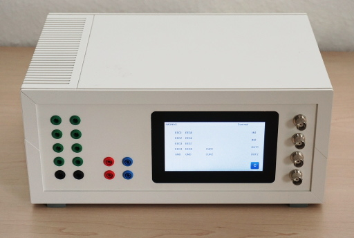

LuckyLoop
LuckyClient:
LuckyClient
LuckyLoop:
Device
Architecture
Elements
Main App
Goertzel
Hardware IO Buffer
Publish with LSL
Ringbuffer
LuckyServer
libsri.so
Building:
Local Compilation
Cross Compilation
LuckyLoop
Docs
»
Device
View page source
Device
¶

Architecture
¶
Elements in gray are not yet sufficiently tested.
Elements
¶
Main App
Goertzel
Hardware IO Buffer
Publish with LSL
Ringbuffer
LuckyServer
libsri.so
![digraph G{
compound=true;
rankdir = LR;
iobuffer[]
main[style=filled]
hw_config[style=filled]
publish
goertzel
subgraph cluster0 {
label = "LuckyLoop:\nreal-time application"
main -> goertzel;
main -> ecat_config;
main -> ringbuffer;
main -> iobuffer;
iobuffer -> hw_config;
main -> publish;
publish -> lsl_c;
publish -> iobuffer;
}
subgraph cluster1{
label= "libsri.so"
sri
}
subgraph cluster2{
label= "LuckyServer:\ncontrols LuckyLoop"
server
}
subgraph cluster3{
label= "Python Clients"
LuckyClient[shape="rect"]
LSLInlet[label="LSL-Inlet", shape="rect"]
}
publish -> LSLInlet[] [label="LSLOutlet", color="blue"];
LuckyClient -> server[lhead=cluster2] [label="TCP/IP", color="blue"];
server -> sri[dir="both", lhead=cluster1] [label="shared memory", color="blue"];
main -> sri[dir="both", lhead=cluster1] [label="shared memory", color="blue"];
}](_images/graphviz-6af51b6563f5715e0ec28b6faf88a98987dab8ac.png)